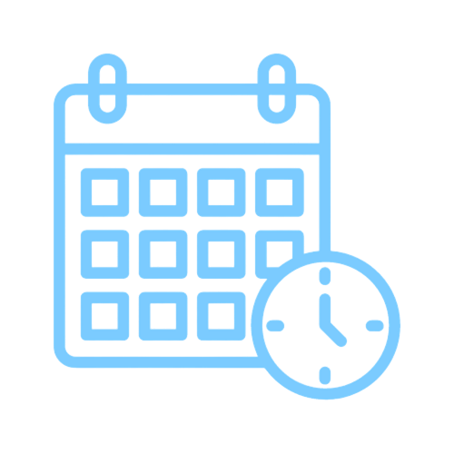

Atitude de Dono
Comprometido, profundo conhecedor, disciplinado e detalhista. Prático, busca excelência, nunca desiste e dá exemplo. Indigna-se com problemas, economiza e é engajado na cultura organizacional.
Determinação
Obstinado, entrega resultados superiores e cumpre compromissos. Resolve problemas, engaja pessoas em objetivos comuns, tem senso de urgência, atitude de dono e nunca desiste.
Disciplina
Cumpre compromissos, é pontual e disciplinado. Focado e pragmático, otimiza tempo, atividades e recursos. Entrega resultados sem criar justificativas ou desculpas.

Disponibilidade
Ama e prioriza o que faz, sempre disponível. Tempo é prioridade; você sempre tem tempo para o que prioriza. Disponibilidade resulta de gostar do que se faz.
Franqueza
Direto, sincero, verdadeiro e transparente, respeitoso, positivo e acolhedor. Não se omite, expressa opiniões contrárias e sabe dizer não.
Humildade
Sabe ouvir, é atencioso, valoriza opiniões e prioriza o coletivo. Pergunta e admite desconhecimento sem arrogância ou vaidade. Respeitoso, não se preocupa com status, prioriza "nós" em vez de "eu".
Simplicidade
Faz as coisas acontecerem de forma prática e simples, mão na massa, direto ao ponto. Descomplica e desburocratiza, sempre respeitando as normas.